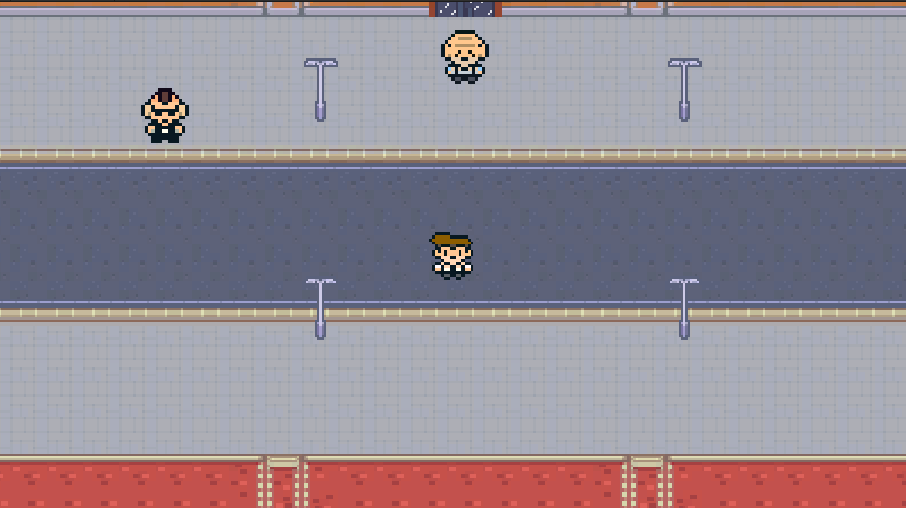
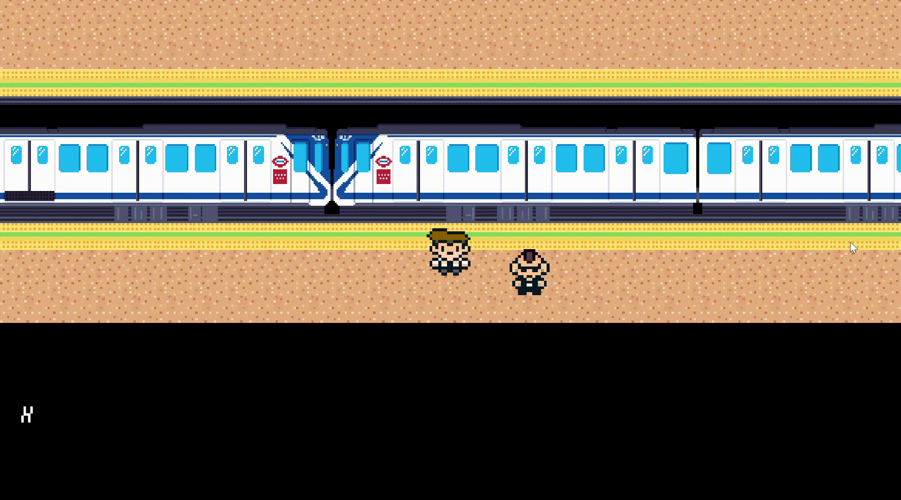

Rayado Vallecano
- Period
- September 2024–January 2025
(5 months) - Tool(s) used
- Unity
Famitracker
Cakewalk
GIMP - Team size
- 6 people
- Role(s)
- Composer
Sprite artist
QA
The game

Rayado Vallecano is a 2D adventure game set in the Madrid neighborhood of Vallecas, submitted as the final project for the Video Game Fundamentals course (Computer Engineering Degree, UPM). The player controls Juan, a kid who just moved to the neighborhood and has just had his phone stolen. Unable to resort to violence, he must earn the trust of his new neighbors to get it back.
My contribution
The team worked across 4 sprints with role rotation. These were my main contributions; the rest of the code, level design and sprites not listed here were the work of my teammates.

Sprints 1–2 · Sprite system and art
I defined the sprite system conventions for the whole team. After finding that
the free-to-use assets didn't match the visual identity we were going for, I started creating my own
sprites: trash containers, garbage truck and other scenery elements.

Sprint 3 · QA and user testing
I wrote and ran unit tests on the features developed by the team.
I coordinated satisfaction testing sessions with the target audience and incorporated the most
relevant changes in collaboration with the rest of the team.
Sprint 4 · Metro scenario and soundtrack
I designed and animated all the sprites for the Metro scenario, including the train and its
movement animation. I composed the game's chiptune soundtrack, built
around simple leitmotifs that accompany each area and character.
What I learned
- Working with Scrum and Kanban in a real 6-person team, with role rotation across 4 sprints.
- Designing spritesheets and frame-by-frame animation in GIMP, and implementing them in Unity from scratch.
- Writing unit tests and designing testing sessions with real users, iterating on their feedback.
- Composing music for video games: short, loopable tracks in Famitracker and Cakewalk, designed to accompany each scene without tiring the player.
- Documenting design decisions in a Game Design Document shared with the team.